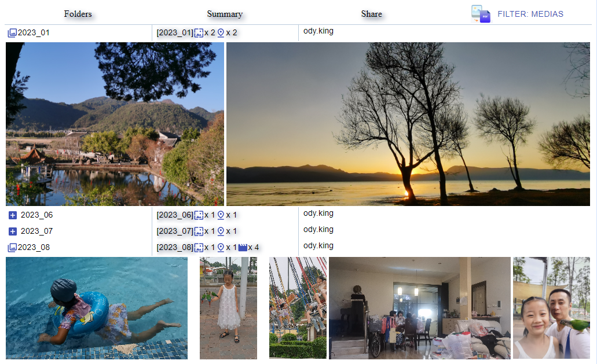

Install Portfolio-synode
Prerequisit
Python 3.12
Portfolio-synode requires Python 3.12. This means you need a Windows 10 if you decide to deploy the a synode on Windows.
Exiftool
For Linux, please also install Exiftool.
Follow the document or use apt to install:
sudo apt install exiftool
And make sure “exiftool -ver” is running.
About JDK 17
Portfolio 0.8 will download and install it’s own JDK 17. Please be aware of this if you have other JDKs installed.
Setting up Synodes
Download synode package according the target OS type at the product page.
- To be verified: Name like x64 is the JRE name. If the installer find that your system
need another JRE, it will automatically download the correct distribution.
Setup on Windows
Unzip into a floder.
FYI, cli commands can be:
mkdir portfolio-synode cd portfolio-synode unzip ../synode-x64_windows-alpha-sampledom.zip
Setup Portfolio-synode’s Python module
Run setup-gui.exe, here is what expected:

Setup local web page service port and data service port, e.g. 8964/8965.
Check reverse proxy only if the host is mapped from a public Internet address.
The local Ip is detected autmatically.
Modify Jservs’ URL
If is setting a public address, say central hub node, leave Sync-in as 0 seconds. No need to care about jservs, but make sure the reverse proxy is set correctly, e.g.
10.0.0.1 8964 / 8965
If is setting a local service node, say your private storage device, or a computer, set Sync-in to typically 60 seconds, while 0 will make the machine stop visiting the hub.
If you change the hub’s url manually, follow exactly the forma:
http://10.0.0.1:8964/jserv-album
Click Save if everything is OK.
There should be a QR Code showing now. You can scan with a Portfolio client later, e.g. the Portfolio Android, to connect to this service node.
Click Install Windows Serivce to start 2 windows services.
Note: To install and start 2 Services, you need confirm with Administrator’s permission, 4 times
Please note the permission dialogs can be hidden behind the current window.
Test in Browser
Check firewall configurations
Protfolio-synode by default will listening on TCP port 8965, like above example, the data service, and port 8964, is the web page server.
Open the webpage in a browser
Open the home page for listing uploaded files, e.g.:
url: http://127.0.0.1:8964/login.html
There should be the files once are uploaded with Portfolio Android.

{kind=link}
And this is the right time to download and scan with the Android client for login. It also needs some setup.
Uninstall Synodes
Uninstall Portfolio-synode on Windows
Uninstall Services for Windows:
In CMD Termnial, or VS Code Bash Termnial,
# cd portfolio-synode
synode-uninstall-srv
This will uninstall the Windows services.
Now it’s safe to delete the portfolio-synode folder, where the zip file is unzipped. The files saving location is specified by the volume path. You can delete the folder if you don’t need the uploaded files anymore.
If files damaged and the services cannot uninstalled, you can uninstall Windows Service manually.